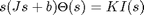
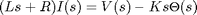
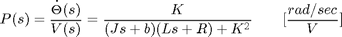
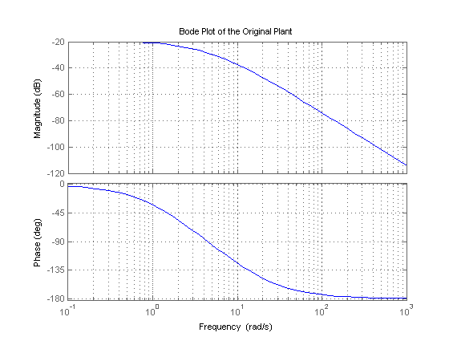
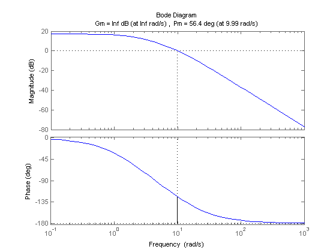
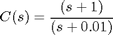
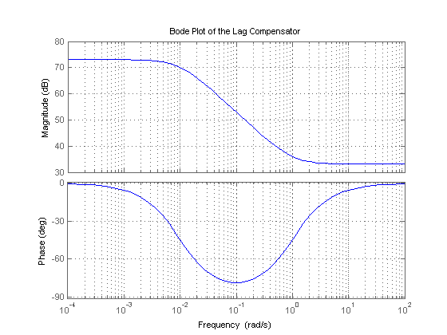
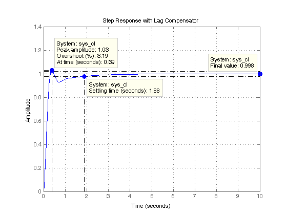

DC Motor Speed: Frequency Domain Methods for Controller Design
Key MATLAB commands used in this tutorial are: tf , bode , >margin , step , feedback
Contents
From the main problem, the dynamic equations in the Laplace domain and the open-loop transfer function of the DC Motor are the following.
(1)
(2)
(3)
The structure of the control system has the form shown in the figure below.

For the original problem setup and the derivation of the above equations, please refer to the DC Motor Speed: System Modeling page
For a 1-rad/sec step reference, the design criteria are the following.
- Settling time less than 2 seconds
- Overshoot less than 5%
- Steady-state error less than 1%
Now let's design a controller using the methods introduced in the Introduction: Frequency Domain Methods for Controller Design page. Create a new m-file and type in the following commands.
J = 0.01;
b = 0.1;
K = 0.01;
R = 1;
L = 0.5;
s = tf('s');
P_motor = K/((J*s+b)*(L*s+R)+K^2);
Drawing the original Bode plot
The main idea of frequency-based design is to use the Bode plot of the open-loop transfer function to estimate the closed-loop response. Adding a controller to the system changes the open-loop Bode plot, thereby changing the closed-loop response. It is our goal to design the controller to shape the open-loop Bode plot in such a way that the closed-loop system behaves in a desired manner. Let's first draw the Bode plot for the original open-loop plant transfer function. Add the following code to the end of your m-file and run it in the MATLAB command window. You should generate the Bode plot shown below.
bode(P_motor)
grid
title('Bode Plot of the Original Plant')
 Adding proportional gain
From the Bode plot above, it appears that the gain margin and phase margin of this system are currently infinite which indicates the system is robust and has minimal overshoot. The problem with this is that the phase margin is infinite because the magnitude plot is below 0 dB at all frequencies. This indicates that the system will have trouble tracking various reference signals without excessive error. Therefore, we would like to increase the gain of the system while still achieving enough phase margin.
A phase margin of 60 degrees is generally sufficient for stability margin. From the above Bode plot, this phase margin is achieved for a crossover frequency of approximately 10 rad/sec. The gain needed to raise the magnitude plot so that the gain crossover frequency occurs at 10 rad/sec appears to be approximately 40 dB. The exact phase and gain of the Bode plot at a given frequency can be determined by clicking on the graph at the corresponding frequency. The bode command, invoked with left-hand arguments, can also be used to provide the exact phase and magnitude at 10 rad/sec as shown below.
[mag,phase,w] = bode(P_motor,10)
mag =
0.0139
phase =
-123.6835
w =
10
Therefore, the exact phase margin for a gain crossover frequency of 10 rad/sec is 180 - 123.7 = 56.3 degrees. Since the exact magnitude at this frequency is 20 log 0.0139 = -37.1 dB, 37.1 dB of gain must be added to the system. Otherwise stated, a proportional gain of 1/0.0139 = 72 will achieve an open-loop gain of 1 at 10 rad/sec. Add the following commands to your m-file to observe the effect of this proportional controller on the system. In this case, we use the margin command instead of the bode command in order to explicitly see the new gain and phase margins and crossover frequencies.
C = 72; margin(C*P_motor);
Plotting the closed-loop response
From the plot above we see that the resulting phase margin and gain crossover frequency are as we expected. Let's see what the closed-loop response look like. Add a % in front of the bode and margin commands to comment them out, then add the following code to the end of your m-file. Rerunning the m-file will produce the step response shown below where the annotations were added by right-clicking on the plot and choosing Characteristics from the resulting menu.
sys_cl = feedback(C*P_motor,1);
t = 0:0.01:10;
step(sys_cl,t), grid
title('Step Response with Proportional Gain = 72')

Note that the settling time is fast enough, but the overshoot and the steady-state error are too high. The overshoot can be reduced by decreasing the gain in order to achieve a larger phase margin, but this would cause the steady-state error to become even larger. A lag compensator could be helpful here in that it can decrease the gain crossover frequency in order to increase the phase margin without decreasing the system's DC gain.
Adding a lag compensator
Consider the following lag compensator:
(4)
This lag compensator has a DC gain of 1/0.01 = 100 which means it will increase the system's static position error constant by a factor of 100 and will reduce the steady-state error associated with the system's closed-loop step response. In fact, it allows us to reduce the proportional gain of 72 used earlier, while still meeting the requirement on steady-state error. We will employ a gain of 45. Furthermore, since the corner frequencies of the pole and zero are a decade or more below the current gain crossover frequency of 10 rad/sec, the phase lag contributed by the compensator shouldn't adversely affect performance much. A Bode plot of the lag compensator can be generated employing the following commands.
C = 45*(s + 1)/(s + 0.01);
bode(C)
grid
title('Bode Plot of the Lag Compensator')
 The resulting step response can then be observed by modifying the code in your m-file as follows.
sys_cl = feedback(C*P_motor,1);
t = 0:0.01:10;
step(sys_cl,t), grid
title('Step Response with Lag Compensator')

Inspection of the above demonstrates that all of the given requirements are now met when the lag compensator described above is employed.